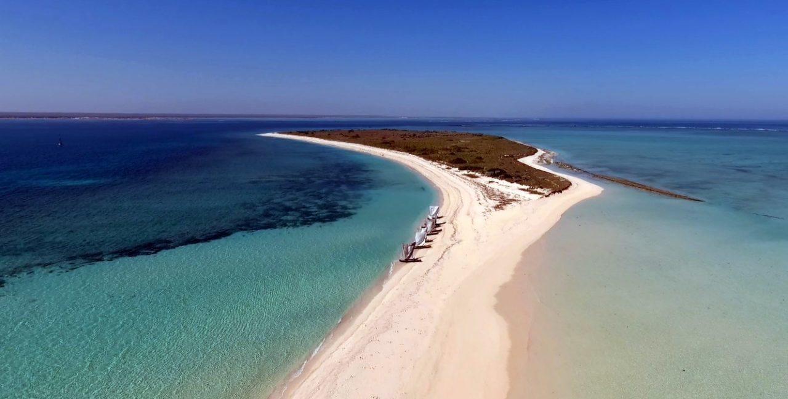
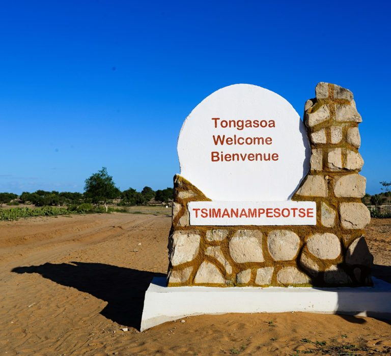
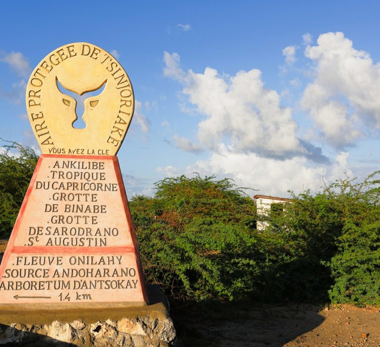

La région dispose d’un écosystème singulier et vous propose une diversité de sites incontournables. Découvrez ainsi nature terrestre et marine en parcourant les meilleurs sites que nous avons sélectionnés pour vous!



Parc National de Nosy Ve-Androka
Le lieu est classé parc national marin en raison de sa biodiversité marine. Sur plus de 90 000 hectares, découvrez au Parc National de Nosy Ve-Androka le troisième système récifal du monde.
Ce parc de la région Sud Ouest est surtout réputé pour son lac de sel étendu sur 20 km de long. Les amoureux de la nature apprécieront les nombreux animaux et plantes qui vivent là. Le parc dénombre une biodiversité telle que son taux...
La Nouvelle Aire Protégée de Tsinjoriake, sanctuaire de la nature
Classée dans la catégorie « monument naturel et paysages harmonieux protégés », cette aire justifie largement son appellation. Les sites sont à couper le souffle. Vous voyagerez entre ciel et terre, vous gravirez des monts pour profiter de...
L'Arboretum d'Antsokay, une réserve naturelle impressionnante
Situé à 12 km au sud-est de la ville de Tuléar, l'Arboretum d'Antsokay vous surprendra par la richesse de sa faune et de sa flore endémiques ! Implanté sur des parcelles de terrains sablonneux d'une superficie de 40 ha, le parc botanique...